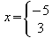

|
||
Nola lor dezaket ezkerreko parentesia eskuineko parentesirik gabe?
Parentesiek taldekatze-funtzioa dutenez, beti etorri behar dute bat eta beti habiaratu behar dira behar bezala.
Parentesi indibidual bat lortzeko dagokion parentesi bikoterik gabe, parentesiari alderantzizko barra bat jarri behar diozu. Adibidez, "[" dagokion "]" gabe lortzeko, \[sartu behar duzu.
Hala, [3;8) tartea edukitzeko, \[3 ";" 8\) sartu behar duzu. Puntu eta komaren inguruko komatxoek letra etzanean idatzita ez dagoela ziurtatzen dute. (Arrazoi duzu, horrek ez du parentesiekin zer ikusirik!)
Parentesi eskalagarrietan, beharrezkoa da left eta right parentesia edukitzea, parentesien arteko edukiak ondo definitua egon behar baitu.
Kasu horretan, none parentesi ikusezina erabil dezakezu parentesi indibiduala lortzeko. Adibidez, "[" dagokion "]" gabe lortzeko, left [...right none sartu behar duzu.
Hala,  idazteko x=left lbrace binom -5 3 right none idatzi behar duzu.
Itzuli Math-eko FAQei buruzko indize-orrialdera | Itzuli erabiltzaileen FAQei buruzko indize-orrialde nagusira
|
|
||